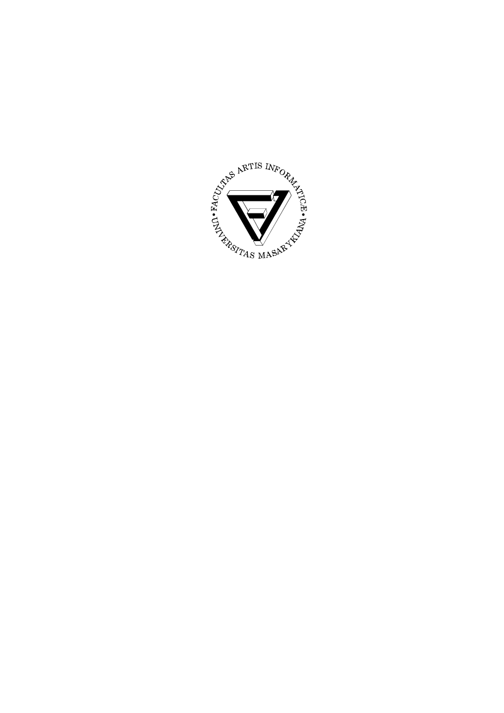
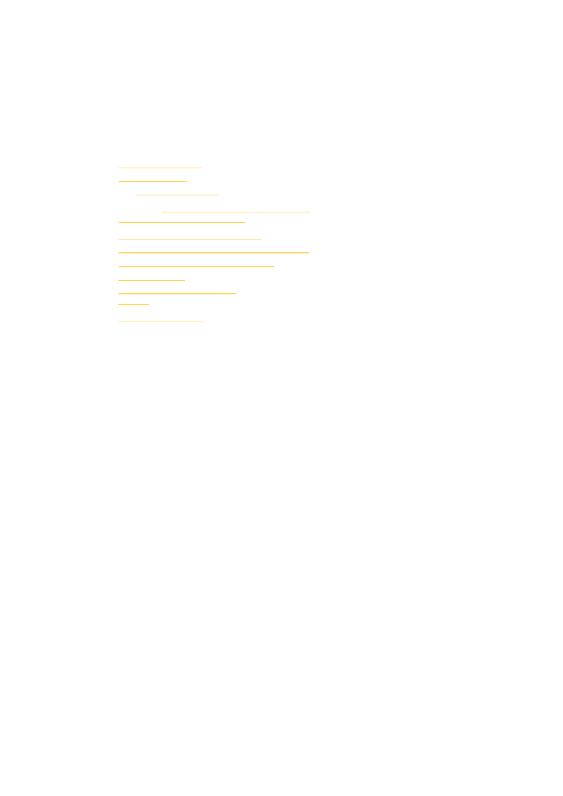
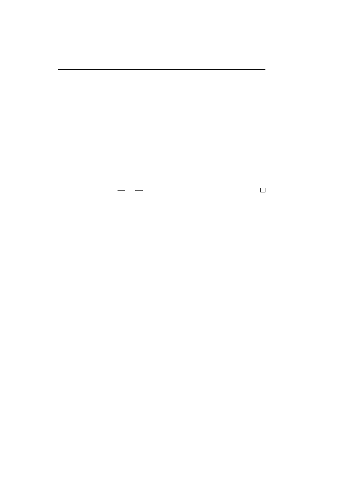
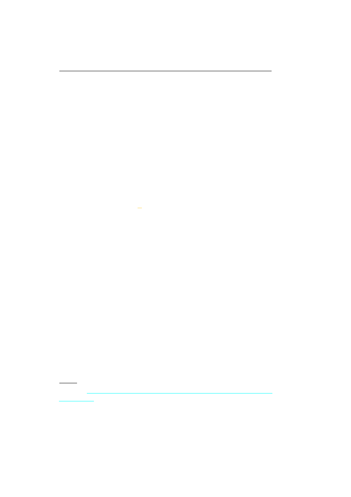
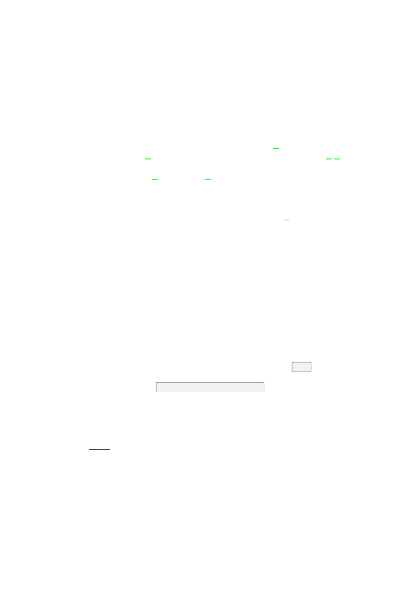

<!DOCTYPE html>
<html xmlns="http://www.w3.org/1999/xhtml" lang="" xml:lang="">
<head>
<title>The Proof of P = NP</title>
<meta http-equiv="Content-Type" content="text/html; charset=UTF-8"/>
<meta name="generator" content="pdftohtml 0.36"/>
<meta name="author" content="Jane Doe"/>
<meta name="keywords" content="keyword1, keyword2, ..."/>
<meta name="date" content="2015-12-10T07:26:34+00:00"/>
<meta name="subject" content=""/>
<style type="text/css">
<!--
.xflip {
    -moz-transform: scaleX(-1);
    -webkit-transform: scaleX(-1);
    -o-transform: scaleX(-1);
    transform: scaleX(-1);
    filter: fliph;
}
.yflip {
    -moz-transform: scaleY(-1);
    -webkit-transform: scaleY(-1);
    -o-transform: scaleY(-1);
    transform: scaleY(-1);
    filter: flipv;
}
.xyflip {
    -moz-transform: scaleX(-1) scaleY(-1);
    -webkit-transform: scaleX(-1) scaleY(-1);
    -o-transform: scaleX(-1) scaleY(-1);
    transform: scaleX(-1) scaleY(-1);
    filter: fliph + flipv;
}
-->
</style>
</head>
<body bgcolor="#A0A0A0" vlink="blue" link="blue">
<!-- Page 1 -->
<a name="1"></a>
<style type="text/css">
<!--
	p {margin: 0; padding: 0;}	.ft10{font-size:28px;font-family:Times;color:#000000;}
	.ft11{font-size:23px;font-family:Times;color:#000000;}
	.ft12{font-size:35px;font-family:Times;color:#000000;}
	.ft13{font-size:35px;font-family:Times;color:#000000;}
	.ft14{font-size:36px;font-family:Times;color:#000000;}
	.ft15{font-size:19px;font-family:Times;color:#000000;}
	.ft16{font-size:23px;font-family:Times;color:#000000;}
-->
</style>
<div id="page1-div" style="position:relative;width:892px;height:1262px;">

<p style="position:absolute;top:195px;left:320px;white-space:nowrap" class="ft10">Masaryk&#160;University</p>
<p style="position:absolute;top:232px;left:327px;white-space:nowrap" class="ft11">Faculty&#160;of&#160;Informatics</p>
<p style="position:absolute;top:520px;left:287px;white-space:nowrap" class="ft12"><b>The&#160;Proof&#160;of&#160;</b>P&#160;=&#160;NP</p>
<p style="position:absolute;top:639px;left:374px;white-space:nowrap" class="ft15">Bachelor’s&#160;Thesis</p>
<p style="position:absolute;top:690px;left:405px;white-space:nowrap" class="ft16"><b>Jane&#160;Doe</b></p>
<p style="position:absolute;top:974px;left:389px;white-space:nowrap" class="ft15">Brno,&#160;Fall&#160;2015</p>
</div>
<!-- Page 2 -->
<a name="2"></a>
<style type="text/css">
<!--
	p {margin: 0; padding: 0;}-->
</style>
<div id="page2-div" style="position:relative;width:892px;height:1262px;">

</div>
<!-- Page 3 -->
<a name="3"></a>
<style type="text/css">
<!--
	p {margin: 0; padding: 0;}-->
</style>
<div id="page3-div" style="position:relative;width:892px;height:1262px;">

<p style="position:absolute;top:195px;left:320px;white-space:nowrap" class="ft30">Masaryk&#160;University</p>
<p style="position:absolute;top:232px;left:327px;white-space:nowrap" class="ft31">Faculty&#160;of&#160;Informatics</p>
<p style="position:absolute;top:520px;left:287px;white-space:nowrap" class="ft32"><b>The&#160;Proof&#160;of&#160;</b>P&#160;=&#160;NP</p>
<p style="position:absolute;top:644px;left:374px;white-space:nowrap" class="ft35">Bachelor’s&#160;Thesis</p>
<p style="position:absolute;top:695px;left:405px;white-space:nowrap" class="ft36"><b>Jane&#160;Doe</b></p>
<p style="position:absolute;top:974px;left:389px;white-space:nowrap" class="ft35">Brno,&#160;Fall&#160;2015</p>
</div>
<!-- Page 4 -->
<a name="4"></a>
<style type="text/css">
<!--
	p {margin: 0; padding: 0;}-->
</style>
<div id="page4-div" style="position:relative;width:892px;height:1262px;">

</div>
<!-- Page 5 -->
<a name="5"></a>
<style type="text/css">
<!--
	p {margin: 0; padding: 0;}	.ft57{font-size:15px;font-family:Times;color:#000000;}
-->
</style>
<div id="page5-div" style="position:relative;width:892px;height:1262px;">

<p style="position:absolute;top:198px;left:188px;white-space:nowrap" class="ft57"><i>Replace&#160;this&#160;page&#160;with&#160;a&#160;copy&#160;of&#160;the&#160;official&#160;signed&#160;thesis&#160;assignment&#160;and&#160;the</i></p>
<p style="position:absolute;top:220px;left:189px;white-space:nowrap" class="ft57"><i>copy&#160;of&#160;the&#160;Statement&#160;of&#160;an&#160;Author.</i></p>
</div>
<!-- Page 6 -->
<a name="6"></a>
<style type="text/css">
<!--
	p {margin: 0; padding: 0;}-->
</style>
<div id="page6-div" style="position:relative;width:892px;height:1262px;">

</div>
<!-- Page 7 -->
<a name="7"></a>
<style type="text/css">
<!--
	p {margin: 0; padding: 0;}	.ft78{font-size:15px;font-family:Times;color:#000000;}
	.ft79{font-size:15px;font-family:Times;color:#000000;}
	.ft710{font-size:15px;line-height:21px;font-family:Times;color:#000000;}
-->
</style>
<div id="page7-div" style="position:relative;width:892px;height:1262px;">

<p style="position:absolute;top:196px;left:189px;white-space:nowrap" class="ft76"><b>Declaration</b></p>
<p style="position:absolute;top:253px;left:189px;white-space:nowrap" class="ft710">Hereby&#160;I&#160;declare&#160;that&#160;this&#160;paper&#160;is&#160;my&#160;original&#160;authorial&#160;work,&#160;which<br/>I&#160;have&#160;worked&#160;out&#160;on&#160;my&#160;own.&#160;All&#160;sources,&#160;references,&#160;and&#160;literature<br/>used&#160;or&#160;excerpted&#160;during&#160;elaboration&#160;of&#160;this&#160;work&#160;are&#160;properly&#160;cited<br/>and&#160;listed&#160;in&#160;complete&#160;reference&#160;to&#160;the&#160;due&#160;source.</p>
<p style="position:absolute;top:425px;left:658px;white-space:nowrap" class="ft78">Jane&#160;Doe</p>
<p style="position:absolute;top:996px;left:188px;white-space:nowrap" class="ft79"><b>Advisor:&#160;</b>John&#160;Smith</p>
<p style="position:absolute;top:1045px;left:724px;white-space:nowrap" class="ft78">i</p>
</div>
<!-- Page 8 -->
<a name="8"></a>
<style type="text/css">
<!--
	p {margin: 0; padding: 0;}-->
</style>
<div id="page8-div" style="position:relative;width:892px;height:1262px;">

</div>
<!-- Page 9 -->
<a name="9"></a>
<style type="text/css">
<!--
	p {margin: 0; padding: 0;}-->
</style>
<div id="page9-div" style="position:relative;width:892px;height:1262px;">

<p style="position:absolute;top:916px;left:188px;white-space:nowrap" class="ft96"><b>Acknowledgement</b></p>
<p style="position:absolute;top:973px;left:188px;white-space:nowrap" class="ft98">This&#160;is&#160;the&#160;acknowledgement&#160;for&#160;my&#160;thesis,&#160;which&#160;can</p>
<p style="position:absolute;top:995px;left:216px;white-space:nowrap" class="ft98">span&#160;multiple&#160;paragraphs.</p>
<p style="position:absolute;top:1045px;left:713px;white-space:nowrap" class="ft98">iii</p>
</div>
<!-- Page 10 -->
<a name="10"></a>
<style type="text/css">
<!--
	p {margin: 0; padding: 0;}-->
</style>
<div id="page10-div" style="position:relative;width:892px;height:1262px;">

<p style="position:absolute;top:196px;left:150px;white-space:nowrap" class="ft106"><b>Abstract</b></p>
<p style="position:absolute;top:253px;left:156px;white-space:nowrap" class="ft108">This&#160;is&#160;the&#160;abstract&#160;of&#160;my&#160;thesis,&#160;which&#160;can</p>
<p style="position:absolute;top:275px;left:178px;white-space:nowrap" class="ft108">span&#160;multiple&#160;paragraphs.</p>
<p style="position:absolute;top:1045px;left:151px;white-space:nowrap" class="ft108">iv</p>
</div>
<!-- Page 11 -->
<a name="11"></a>
<style type="text/css">
<!--
	p {margin: 0; padding: 0;}-->
</style>
<div id="page11-div" style="position:relative;width:892px;height:1262px;">

<p style="position:absolute;top:196px;left:189px;white-space:nowrap" class="ft116"><b>Keywords</b></p>
<p style="position:absolute;top:253px;left:189px;white-space:nowrap" class="ft118">keyword1,&#160;keyword2,&#160;.&#160;.&#160;.</p>
<p style="position:absolute;top:1045px;left:719px;white-space:nowrap" class="ft118">v</p>
</div>
<!-- Page 12 -->
<a name="12"></a>
<style type="text/css">
<!--
	p {margin: 0; padding: 0;}-->
</style>
<div id="page12-div" style="position:relative;width:892px;height:1262px;">

</div>
<!-- Page 13 -->
<a name="13"></a>
<style type="text/css">
<!--
	p {margin: 0; padding: 0;}-->
</style>
<div id="page13-div" style="position:relative;width:892px;height:1262px;">

<p style="position:absolute;top:195px;left:189px;white-space:nowrap" class="ft136"><b>Contents</b></p>
<p style="position:absolute;top:252px;left:189px;white-space:nowrap" class="ft138"><a href="out00.html#19">1&#160;<b>Introduction&#160;</b></a>.&#160;.&#160;.&#160;.&#160;.&#160;.&#160;.&#160;.&#160;.&#160;.&#160;.&#160;.&#160;.&#160;.&#160;.&#160;.&#160;.&#160;.&#160;.&#160;.&#160;.&#160;.&#160;.&#160;.&#160;.&#160;.&#160;.&#160;.</p>
<p style="position:absolute;top:252px;left:721px;white-space:nowrap" class="ft138">1</p>
<p style="position:absolute;top:274px;left:189px;white-space:nowrap" class="ft138"><a href="out00.html#21">2&#160;<b>These&#160;are&#160;</b></a>.&#160;.&#160;.&#160;.&#160;.&#160;.&#160;.&#160;.&#160;.&#160;.&#160;.&#160;.&#160;.&#160;.&#160;.&#160;.&#160;.&#160;.&#160;.&#160;.&#160;.&#160;.&#160;.&#160;.&#160;.&#160;.&#160;.&#160;.&#160;.&#160;.</p>
<p style="position:absolute;top:274px;left:720px;white-space:nowrap" class="ft138">3</p>
<p style="position:absolute;top:295px;left:216px;white-space:nowrap" class="ft138"><a href="out00.html#21">2.1</a></p>
<p style="position:absolute;top:295px;left:257px;white-space:nowrap" class="ft137"><a href="out00.html#21"><i>the&#160;available</i></a></p>
<p style="position:absolute;top:295px;left:355px;white-space:nowrap" class="ft138">.&#160;.&#160;.&#160;.&#160;.&#160;.&#160;.&#160;.&#160;.&#160;.&#160;.&#160;.&#160;.&#160;.&#160;.&#160;.&#160;.&#160;.&#160;.&#160;.&#160;.&#160;.&#160;.&#160;.&#160;.&#160;.</p>
<p style="position:absolute;top:295px;left:720px;white-space:nowrap" class="ft138">3</p>
<p style="position:absolute;top:317px;left:257px;white-space:nowrap" class="ft138"><a href="out00.html#21">2.1.1</a></p>
<p style="position:absolute;top:317px;left:315px;white-space:nowrap" class="ft138"><a href="out00.html#21">sectioning&#160;commands.&#160;</a>.&#160;.&#160;.&#160;.&#160;.&#160;.&#160;.&#160;.&#160;.&#160;.&#160;.&#160;.&#160;.&#160;.&#160;.</p>
<p style="position:absolute;top:317px;left:720px;white-space:nowrap" class="ft138">3</p>
<p style="position:absolute;top:339px;left:189px;white-space:nowrap" class="ft138"><a href="out00.html#23">3&#160;<b>Floats&#160;and&#160;references&#160;</b></a>.&#160;.&#160;.&#160;.&#160;.&#160;.&#160;.&#160;.&#160;.&#160;.&#160;.&#160;.&#160;.&#160;.&#160;.&#160;.&#160;.&#160;.&#160;.&#160;.&#160;.&#160;.&#160;.</p>
<p style="position:absolute;top:339px;left:720px;white-space:nowrap" class="ft138">5</p>
<p style="position:absolute;top:360px;left:189px;white-space:nowrap" class="ft138"><a href="out00.html#25">4&#160;<b>Mathematical&#160;equations&#160;</b></a>.&#160;.&#160;.&#160;.&#160;.&#160;.&#160;.&#160;.&#160;.&#160;.&#160;.&#160;.&#160;.&#160;.&#160;.&#160;.&#160;.&#160;.&#160;.&#160;.&#160;.</p>
<p style="position:absolute;top:360px;left:720px;white-space:nowrap" class="ft138">7</p>
<p style="position:absolute;top:382px;left:189px;white-space:nowrap" class="ft138"><a href="out00.html#27">5&#160;We&#160;have&#160;several&#160;fonts&#160;<i>at&#160;</i><b>disposal&#160;</b></a>.&#160;.&#160;.&#160;.&#160;.&#160;.&#160;.&#160;.&#160;.&#160;.&#160;.&#160;.&#160;.&#160;.&#160;.</p>
<p style="position:absolute;top:382px;left:720px;white-space:nowrap" class="ft138">9</p>
<p style="position:absolute;top:404px;left:189px;white-space:nowrap" class="ft1310"><a href="out00.html#29">6&#160;<b>Inserting&#160;the&#160;bibliography&#160;</b></a>.&#160;.&#160;.&#160;.&#160;.&#160;.&#160;.&#160;.&#160;.&#160;.&#160;.&#160;.&#160;.&#160;.&#160;.&#160;.&#160;.&#160;.&#160;.&#160;11<br/><a href="out00.html#31">Bibliography&#160;</a>.&#160;.&#160;.&#160;.&#160;.&#160;.&#160;.&#160;.&#160;.&#160;.&#160;.&#160;.&#160;.&#160;.&#160;.&#160;.&#160;.&#160;.&#160;.&#160;.&#160;.&#160;.&#160;.&#160;.&#160;.&#160;.&#160;.&#160;.&#160;.&#160;.&#160;13<br/><a href="out00.html#33">7&#160;<b>Inserting&#160;the&#160;index&#160;</b></a>.&#160;.&#160;.&#160;.&#160;.&#160;.&#160;.&#160;.&#160;.&#160;.&#160;.&#160;.&#160;.&#160;.&#160;.&#160;.&#160;.&#160;.&#160;.&#160;.&#160;.&#160;.&#160;.&#160;.&#160;15<br/><a href="out00.html#35">Index&#160;</a>.&#160;.&#160;.&#160;.&#160;.&#160;.&#160;.&#160;.&#160;.&#160;.&#160;.&#160;.&#160;.&#160;.&#160;.&#160;.&#160;.&#160;.&#160;.&#160;.&#160;.&#160;.&#160;.&#160;.&#160;.&#160;.&#160;.&#160;.&#160;.&#160;.&#160;.&#160;.&#160;.&#160;.&#160;17<br/><a href="out00.html#37">A&#160;<b>An&#160;appendix&#160;</b></a>.&#160;.&#160;.&#160;.&#160;.&#160;.&#160;.&#160;.&#160;.&#160;.&#160;.&#160;.&#160;.&#160;.&#160;.&#160;.&#160;.&#160;.&#160;.&#160;.&#160;.&#160;.&#160;.&#160;.&#160;.&#160;.&#160;.&#160;.&#160;19</p>
<p style="position:absolute;top:1045px;left:708px;white-space:nowrap" class="ft138">vii</p>
</div>
<!-- Page 14 -->
<a name="14"></a>
<style type="text/css">
<!--
	p {margin: 0; padding: 0;}-->
</style>
<div id="page14-div" style="position:relative;width:892px;height:1262px;">

</div>
<!-- Page 15 -->
<a name="15"></a>
<style type="text/css">
<!--
	p {margin: 0; padding: 0;}-->
</style>
<div id="page15-div" style="position:relative;width:892px;height:1262px;">

<p style="position:absolute;top:196px;left:189px;white-space:nowrap" class="ft156"><b>List&#160;of&#160;Tables</b></p>
<p style="position:absolute;top:253px;left:189px;white-space:nowrap" class="ft158"><a href="out00.html#24">3.1</a></p>
<p style="position:absolute;top:253px;left:234px;white-space:nowrap" class="ft158"><a href="out00.html#24">A&#160;weather&#160;forecast&#160;</a><i>6</i></p>
<p style="position:absolute;top:1045px;left:715px;white-space:nowrap" class="ft158">ix</p>
</div>
<!-- Page 16 -->
<a name="16"></a>
<style type="text/css">
<!--
	p {margin: 0; padding: 0;}-->
</style>
<div id="page16-div" style="position:relative;width:892px;height:1262px;">

</div>
<!-- Page 17 -->
<a name="17"></a>
<style type="text/css">
<!--
	p {margin: 0; padding: 0;}	.ft1711{font-size:11px;font-family:Times;color:#000000;}
-->
</style>
<div id="page17-div" style="position:relative;width:892px;height:1262px;">

<p style="position:absolute;top:196px;left:189px;white-space:nowrap" class="ft176"><b>List&#160;of&#160;Figures</b></p>
<p style="position:absolute;top:253px;left:189px;white-space:nowrap" class="ft178"><a href="out00.html#23">3.1</a></p>
<p style="position:absolute;top:253px;left:234px;white-space:nowrap" class="ft178"><a href="out00.html#23">The&#160;logo&#160;of&#160;the&#160;Masaryk&#160;University&#160;at&#160;40&#160;mm&#160;</a><i>5</i></p>
<p style="position:absolute;top:275px;left:189px;white-space:nowrap" class="ft178"><a href="out00.html#24">3.2</a></p>
<p style="position:absolute;top:275px;left:234px;white-space:nowrap" class="ft178"><a href="out00.html#24">The&#160;logo&#160;of&#160;the&#160;Masaryk&#160;University&#160;at&#160;2</a></p>
<p style="position:absolute;top:284px;left:540px;white-space:nowrap" class="ft1711"><a href="out00.html#24">3&#160;and</a></p>
<p style="position:absolute;top:271px;left:590px;white-space:nowrap" class="ft1711"><a href="out00.html#24">1</a></p>
<p style="position:absolute;top:284px;left:590px;white-space:nowrap" class="ft1711"><a href="out00.html#24">3&#160;of&#160;text</a></p>
<p style="position:absolute;top:297px;left:233px;white-space:nowrap" class="ft178"><a href="out00.html#24">width&#160;</a><i>6</i></p>
<p style="position:absolute;top:1045px;left:715px;white-space:nowrap" class="ft178">xi</p>
</div>
<!-- Page 18 -->
<a name="18"></a>
<style type="text/css">
<!--
	p {margin: 0; padding: 0;}-->
</style>
<div id="page18-div" style="position:relative;width:892px;height:1262px;">

</div>
<!-- Page 19 -->
<a name="19"></a>
<style type="text/css">
<!--
	p {margin: 0; padding: 0;}-->
</style>
<div id="page19-div" style="position:relative;width:892px;height:1262px;">

<p style="position:absolute;top:196px;left:188px;white-space:nowrap" class="ft196"><b>1&#160;Introduction</b></p>
<p style="position:absolute;top:253px;left:188px;white-space:nowrap" class="ft198">Theses&#160;are&#160;rumoured&#160;to&#160;be&#160;the&#160;capstones&#160;of&#160;education,&#160;so&#160;I&#160;decided</p>
<p style="position:absolute;top:275px;left:189px;white-space:nowrap" class="ft1910">to&#160;write&#160;one&#160;of&#160;my&#160;own.&#160;If&#160;all&#160;goes&#160;well,&#160;I&#160;will&#160;soon&#160;have&#160;a&#160;diploma<br/>under&#160;my&#160;belt.&#160;Wish&#160;me&#160;luck!</p>
<p style="position:absolute;top:318px;left:216px;white-space:nowrap" class="ft198">Říká&#160;se,&#160;že&#160;závěrečné&#160;práce&#160;jsou&#160;vyvrcholením&#160;studia&#160;a&#160;tak&#160;jsem&#160;se</p>
<p style="position:absolute;top:340px;left:189px;white-space:nowrap" class="ft1910">rozhodl&#160;jednu&#160;také&#160;napsat.&#160;Pokud&#160;vše&#160;půjde&#160;podle&#160;plánu,&#160;odnesu&#160;si<br/>na&#160;konci&#160;semestru&#160;diplom.&#160;Držte&#160;mi&#160;palce!</p>
<p style="position:absolute;top:383px;left:216px;white-space:nowrap" class="ft198">Hovorí&#160;sa,&#160;že&#160;záverečné&#160;práce&#160;sú&#160;vyvrcholením&#160;štúdia&#160;a&#160;tak&#160;som&#160;sa</p>
<p style="position:absolute;top:405px;left:189px;white-space:nowrap" class="ft1910">rozhodol&#160;jednu&#160;tiež&#160;napísať.&#160;Ak&#160;všetko&#160;pôjde&#160;podľa&#160;plánu,&#160;odnesiem<br/>si&#160;na&#160;konci&#160;semestra&#160;diplom.&#160;Držte&#160;mi&#160;palce!</p>
<p style="position:absolute;top:448px;left:216px;white-space:nowrap" class="ft198">Man&#160;munkelt,&#160;dass&#160;die&#160;Dissertation&#160;die&#160;Krönung&#160;der&#160;Ausbildung</p>
<p style="position:absolute;top:470px;left:189px;white-space:nowrap" class="ft198">ist.&#160;Deshalb&#160;habe&#160;ich&#160;mich&#160;beschlossen&#160;meine&#160;eigene&#160;zu&#160;schreiben.</p>
<p style="position:absolute;top:492px;left:188px;white-space:nowrap" class="ft198">Wenn&#160;alles&#160;gut&#160;geht,&#160;bekomme&#160;ich&#160;bald&#160;ein&#160;Diplom.&#160;Wünsch&#160;mir</p>
<p style="position:absolute;top:513px;left:189px;white-space:nowrap" class="ft198">Glück!</p>
<p style="position:absolute;top:534px;left:216px;white-space:nowrap" class="ft198">Говорят,&#160;что&#160;тезис&#160;–&#160;это&#160;кульминация&#160;обучения.&#160;Поэтому&#160;я&#160;и</p>
<p style="position:absolute;top:556px;left:189px;white-space:nowrap" class="ft1910">решил&#160;написать&#160;собственный&#160;тезис.&#160;Если&#160;всё&#160;сработает&#160;по&#160;плану,<br/>я&#160;скоро&#160;получу&#160;диплом.&#160;Желайте&#160;мне&#160;удачи!</p>
<p style="position:absolute;top:1045px;left:720px;white-space:nowrap" class="ft198">1</p>
</div>
<!-- Page 20 -->
<a name="20"></a>
<style type="text/css">
<!--
	p {margin: 0; padding: 0;}-->
</style>
<div id="page20-div" style="position:relative;width:892px;height:1262px;">

</div>
<!-- Page 21 -->
<a name="21"></a>
<style type="text/css">
<!--
	p {margin: 0; padding: 0;}	.ft2112{font-size:19px;font-family:Times;color:#000000;}
-->
</style>
<div id="page21-div" style="position:relative;width:892px;height:1262px;">

<p style="position:absolute;top:196px;left:189px;white-space:nowrap" class="ft216"><b>2&#160;These&#160;are</b></p>
<p style="position:absolute;top:256px;left:189px;white-space:nowrap" class="ft2112"><b>2.1&#160;the&#160;available</b></p>
<p style="position:absolute;top:299px;left:189px;white-space:nowrap" class="ft219"><b>2.1.1&#160;sectioning&#160;commands.</b></p>
<p style="position:absolute;top:333px;left:189px;white-space:nowrap" class="ft219"><b>Paragraphs&#160;and</b></p>
<p style="position:absolute;top:382px;left:216px;white-space:nowrap" class="ft219"><b>subparagraphs&#160;are&#160;available&#160;as&#160;well.</b></p>
<p style="position:absolute;top:382px;left:536px;white-space:nowrap" class="ft218">Inside&#160;the&#160;text,&#160;you&#160;can</p>
<p style="position:absolute;top:404px;left:189px;white-space:nowrap" class="ft218">also&#160;use&#160;unnumbered&#160;lists,</p>
<p style="position:absolute;top:441px;left:216px;white-space:nowrap" class="ft218">∙&#160;such&#160;as</p>
<p style="position:absolute;top:479px;left:216px;white-space:nowrap" class="ft218">∙&#160;this&#160;one</p>
<p style="position:absolute;top:518px;left:255px;white-space:nowrap" class="ft219"><b>–&#160;</b>and&#160;they&#160;can&#160;be&#160;nested&#160;as&#160;well.</p>
<p style="position:absolute;top:548px;left:255px;white-space:nowrap" class="ft218">»&#160;You&#160;can&#160;even&#160;turn&#160;the&#160;bullets&#160;into&#160;something&#160;fancier,</p>
<p style="position:absolute;top:577px;left:255px;white-space:nowrap" class="ft218">§&#160;if&#160;you&#160;so&#160;desire.</p>
<p style="position:absolute;top:615px;left:189px;white-space:nowrap" class="ft218">Numbered&#160;lists&#160;are</p>
<p style="position:absolute;top:653px;left:211px;white-space:nowrap" class="ft218">1.&#160;very</p>
<p style="position:absolute;top:691px;left:243px;white-space:nowrap" class="ft218">(a)&#160;similar</p>
<p style="position:absolute;top:729px;left:189px;white-space:nowrap" class="ft218">and&#160;so&#160;are&#160;description&#160;lists:</p>
<p style="position:absolute;top:767px;left:189px;white-space:nowrap" class="ft219"><b>Description&#160;list&#160;</b>A&#160;list&#160;of&#160;terms&#160;with&#160;a&#160;description&#160;of&#160;each&#160;term</p>
<p style="position:absolute;top:805px;left:188px;white-space:nowrap" class="ft218">The&#160;spacing&#160;of&#160;these&#160;lists&#160;is&#160;geared&#160;towards&#160;paragraphs&#160;of&#160;text.&#160;For</p>
<p style="position:absolute;top:826px;left:189px;white-space:nowrap" class="ft218">lists&#160;of&#160;words&#160;and&#160;phrases,&#160;the&#160;paralist&#160;package&#160;offers&#160;commands</p>
<p style="position:absolute;top:848px;left:216px;white-space:nowrap" class="ft218">∙&#160;that</p>
<p style="position:absolute;top:870px;left:255px;white-space:nowrap" class="ft219"><b>–&#160;</b>are</p>
<p style="position:absolute;top:891px;left:289px;white-space:nowrap" class="ft218">*&#160;better</p>
<p style="position:absolute;top:913px;left:323px;white-space:nowrap" class="ft218">·&#160;suited</p>
<p style="position:absolute;top:935px;left:211px;white-space:nowrap" class="ft218">1.&#160;to</p>
<p style="position:absolute;top:956px;left:243px;white-space:nowrap" class="ft218">(a)&#160;this</p>
<p style="position:absolute;top:978px;left:288px;white-space:nowrap" class="ft218">i.&#160;kind&#160;of</p>
<p style="position:absolute;top:1000px;left:310px;white-space:nowrap" class="ft218">A.&#160;content.</p>
<p style="position:absolute;top:1045px;left:720px;white-space:nowrap" class="ft218">3</p>
</div>
<!-- Page 22 -->
<a name="22"></a>
<style type="text/css">
<!--
	p {margin: 0; padding: 0;}	.ft2213{font-size:16px;font-family:Times;color:#000000;}
	.ft2214{font-size:12px;font-family:Times;color:#000000;}
	.ft2215{font-size:11px;font-family:Times;color:#000000;}
	.ft2216{font-size:8px;font-family:Times;color:#000000;}
	.ft2217{font-size:15px;line-height:10px;font-family:Times;color:#000000;}
-->
</style>
<div id="page22-div" style="position:relative;width:892px;height:1262px;">

<p style="position:absolute;top:162px;left:151px;white-space:nowrap" class="ft228">2.&#160;These&#160;are</p>
<p style="position:absolute;top:198px;left:151px;white-space:nowrap" class="ft228">The&#160;amsthm&#160;package&#160;provides&#160;the&#160;commands&#160;necessary&#160;for&#160;the&#160;type-</p>
<p style="position:absolute;top:220px;left:151px;white-space:nowrap" class="ft228">setting&#160;of&#160;mathematical&#160;definitions,&#160;theorems,&#160;lemmas&#160;and&#160;proofs.</p>
<p style="position:absolute;top:256px;left:151px;white-space:nowrap" class="ft229"><b>Theorem&#160;2.1.1.&#160;</b><i>This&#160;is&#160;a&#160;theorem&#160;that&#160;offers&#160;a&#160;profound&#160;insight&#160;into&#160;the</i></p>
<p style="position:absolute;top:278px;left:151px;white-space:nowrap" class="ft227"><i>mathematical&#160;sectioning&#160;commands.</i></p>
<p style="position:absolute;top:315px;left:151px;white-space:nowrap" class="ft229"><b>Theorem&#160;2.1.2&#160;</b>(Another&#160;theorem)<b>.&#160;</b><i>This&#160;is&#160;another&#160;theorem.&#160;Unlike&#160;the</i></p>
<p style="position:absolute;top:336px;left:151px;white-space:nowrap" class="ft227"><i>first&#160;one,&#160;this&#160;theorem&#160;has&#160;been&#160;endowed&#160;with&#160;a&#160;name.</i></p>
<p style="position:absolute;top:373px;left:151px;white-space:nowrap" class="ft229"><b>Lemma&#160;2.1.3.&#160;</b><i>Let&#160;us&#160;suppose&#160;that&#160;</i>x2&#160;+&#160;y2&#160;=&#160;z2<i>.&#160;Then</i></p>
<p style="position:absolute;top:412px;left:267px;white-space:nowrap" class="ft228"></p>
<p style="position:absolute;top:425px;left:280px;white-space:nowrap" class="ft228">u</p>
<p style="position:absolute;top:411px;left:296px;white-space:nowrap" class="ft2217"><br/><br/><br/></p>
<p style="position:absolute;top:409px;left:314px;white-space:nowrap" class="ft2211">n</p>
<p style="position:absolute;top:418px;left:308px;white-space:nowrap" class="ft221">∑</p>
<p style="position:absolute;top:448px;left:307px;white-space:nowrap" class="ft2211">i=1</p>
<p style="position:absolute;top:425px;left:333px;white-space:nowrap" class="ft228">F(ei,&#160;v)ei</p>
<p style="position:absolute;top:412px;left:400px;white-space:nowrap" class="ft228"></p>
<p style="position:absolute;top:425px;left:419px;white-space:nowrap" class="ft2213">=&#160;F</p>
<p style="position:absolute;top:412px;left:450px;white-space:nowrap" class="ft228"></p>
<p style="position:absolute;top:409px;left:471px;white-space:nowrap" class="ft2211">n</p>
<p style="position:absolute;top:418px;left:465px;white-space:nowrap" class="ft221">∑</p>
<p style="position:absolute;top:448px;left:463px;white-space:nowrap" class="ft2211">i=1</p>
<p style="position:absolute;top:424px;left:485px;white-space:nowrap" class="ft2213">⟨ei|u⟩ei,&#160;v</p>
<p style="position:absolute;top:412px;left:558px;white-space:nowrap" class="ft228"></p>
<p style="position:absolute;top:425px;left:572px;white-space:nowrap" class="ft228">.</p>
<p style="position:absolute;top:425px;left:657px;white-space:nowrap" class="ft228">(2.1)</p>
<p style="position:absolute;top:487px;left:151px;white-space:nowrap" class="ft227"><i>Proof.&#160;</i>∇2&#160;f&#160;(x,&#160;y)&#160;=</p>
<p style="position:absolute;top:484px;left:306px;white-space:nowrap" class="ft2215"><i>∂</i></p>
<p style="position:absolute;top:478px;left:313px;white-space:nowrap" class="ft2216">2&#160;f</p>
<p style="position:absolute;top:501px;left:306px;white-space:nowrap" class="ft2215"><i>∂</i>x2</p>
<p style="position:absolute;top:487px;left:332px;white-space:nowrap" class="ft2213">+</p>
<p style="position:absolute;top:484px;left:352px;white-space:nowrap" class="ft2215"><i>∂</i></p>
<p style="position:absolute;top:478px;left:359px;white-space:nowrap" class="ft2216">2&#160;f</p>
<p style="position:absolute;top:501px;left:352px;white-space:nowrap" class="ft2215"><i>∂</i>y2</p>
<p style="position:absolute;top:487px;left:374px;white-space:nowrap" class="ft228">.</p>
<p style="position:absolute;top:528px;left:151px;white-space:nowrap" class="ft229"><b>Corrolary&#160;2.1.4.&#160;</b><i>This&#160;is&#160;a&#160;corrolary.</i></p>
<p style="position:absolute;top:564px;left:151px;white-space:nowrap" class="ft227"><i>Remark.</i></p>
<p style="position:absolute;top:564px;left:218px;white-space:nowrap" class="ft228">This&#160;is&#160;a&#160;remark.</p>
<p style="position:absolute;top:1045px;left:151px;white-space:nowrap" class="ft228">4</p>
</div>
<!-- Page 23 -->
<a name="23"></a>
<style type="text/css">
<!--
	p {margin: 0; padding: 0;}-->
</style>
<div id="page23-div" style="position:relative;width:892px;height:1262px;">

<p style="position:absolute;top:196px;left:189px;white-space:nowrap" class="ft236"><b>3&#160;Floats&#160;and&#160;references</b></p>
<p style="position:absolute;top:253px;left:188px;white-space:nowrap" class="ft238">The&#160;logo&#160;of&#160;the&#160;Masaryk&#160;University&#160;is&#160;shown&#160;in&#160;Figure&#160;<a href="out00.html#23">3.1&#160;</a>and&#160;Figure</p>
<p style="position:absolute;top:275px;left:189px;white-space:nowrap" class="ft2310"><a href="out00.html#24">3.2&#160;</a>at&#160;pages&#160;<a href="out00.html#23">5&#160;</a>and&#160;<a href="out00.html#24">6.&#160;</a>The&#160;weather&#160;forecast&#160;is&#160;shown&#160;in&#160;Table&#160;<a href="out00.html#24">3.1&#160;</a>at&#160;page<br/><a href="out00.html#24">6.&#160;</a>The&#160;following&#160;chapter&#160;is&#160;Chapter&#160;<a href="out00.html#25">4&#160;</a>and&#160;starts&#160;at&#160;page&#160;<a href="out00.html#25">7.&#160;</a>Items&#160;<a href="out00.html#23">3,&#160;3b,<br/></a>and&#160;<a href="out00.html#23">3(c)iv&#160;</a>are&#160;starred&#160;in&#160;the&#160;following&#160;list:</p>
<p style="position:absolute;top:340px;left:211px;white-space:nowrap" class="ft2310">1.&#160;some&#160;text<br/>2.&#160;some&#160;other&#160;text<br/>3.&#160;?</p>
<p style="position:absolute;top:405px;left:243px;white-space:nowrap" class="ft238">(a)&#160;some&#160;text</p>
<p style="position:absolute;top:427px;left:242px;white-space:nowrap" class="ft238">(b)&#160;?</p>
<p style="position:absolute;top:448px;left:244px;white-space:nowrap" class="ft238">(c)&#160;some&#160;other&#160;text</p>
<p style="position:absolute;top:470px;left:288px;white-space:nowrap" class="ft238">i.&#160;some&#160;text</p>
<p style="position:absolute;top:492px;left:283px;white-space:nowrap" class="ft238">ii.&#160;some&#160;other&#160;text</p>
<p style="position:absolute;top:513px;left:278px;white-space:nowrap" class="ft238">iii.&#160;yet&#160;another&#160;piece&#160;of&#160;text</p>
<p style="position:absolute;top:535px;left:280px;white-space:nowrap" class="ft238">iv.&#160;?</p>
<p style="position:absolute;top:557px;left:241px;white-space:nowrap" class="ft238">(d)&#160;yet&#160;another&#160;piece&#160;of&#160;text</p>
<p style="position:absolute;top:578px;left:211px;white-space:nowrap" class="ft238">4.&#160;yet&#160;another&#160;piece&#160;of&#160;text</p>
<p style="position:absolute;top:600px;left:189px;white-space:nowrap" class="ft238">If&#160;your&#160;reference&#160;points&#160;to&#160;a&#160;place&#160;that&#160;has&#160;not&#160;yet&#160;been&#160;typeset,&#160;the</p>
<p style="position:absolute;top:624px;left:188px;white-space:nowrap" class="ft238">\ref</p>
<p style="position:absolute;top:622px;left:231px;white-space:nowrap" class="ft238">command&#160;will&#160;expand&#160;to&#160;<b>??&#160;</b>during&#160;the&#160;first&#160;run&#160;of&#160;pdflatex</p>
<p style="position:absolute;top:645px;left:189px;white-space:nowrap" class="ft238">fi-pdflatex.tex</p>
<p style="position:absolute;top:643px;left:334px;white-space:nowrap" class="ft238">and&#160;a&#160;second&#160;run&#160;is&#160;going&#160;to&#160;be&#160;needed&#160;for&#160;the</p>
<p style="position:absolute;top:665px;left:189px;white-space:nowrap" class="ft238">references&#160;to&#160;resolve.&#160;With&#160;online&#160;services&#160;–&#160;such&#160;as&#160;Overleaf&#160;–&#160;this&#160;is</p>
<p style="position:absolute;top:687px;left:188px;white-space:nowrap" class="ft238">performed&#160;automatically.</p>
<p style="position:absolute;top:995px;left:237px;white-space:nowrap" class="ft238">Figure&#160;3.1:&#160;The&#160;logo&#160;of&#160;the&#160;Masaryk&#160;University&#160;at&#160;40&#160;mm</p>
<p style="position:absolute;top:1045px;left:720px;white-space:nowrap" class="ft238">5</p>
</div>
<!-- Page 24 -->
<a name="24"></a>
<style type="text/css">
<!--
	p {margin: 0; padding: 0;}-->
</style>
<div id="page24-div" style="position:relative;width:892px;height:1262px;">

<p style="position:absolute;top:157px;left:151px;white-space:nowrap" class="ft248">3.&#160;Floats&#160;and&#160;references</p>
<p style="position:absolute;top:612px;left:151px;white-space:nowrap" class="ft248">Figure&#160;3.2:&#160;The&#160;logo&#160;of&#160;the&#160;Masaryk&#160;University&#160;at&#160;2</p>
<p style="position:absolute;top:622px;left:532px;white-space:nowrap" class="ft2411">3&#160;and</p>
<p style="position:absolute;top:608px;left:580px;white-space:nowrap" class="ft2411">1</p>
<p style="position:absolute;top:622px;left:580px;white-space:nowrap" class="ft2411">3&#160;of&#160;text&#160;width</p>
<p style="position:absolute;top:734px;left:160px;white-space:nowrap" class="ft248">Day</p>
<p style="position:absolute;top:734px;left:270px;white-space:nowrap" class="ft248">Min&#160;Temp&#160;Max&#160;Temp&#160;Summary</p>
<p style="position:absolute;top:761px;left:160px;white-space:nowrap" class="ft248">Monday</p>
<p style="position:absolute;top:762px;left:270px;white-space:nowrap" class="ft248">13∘C</p>
<p style="position:absolute;top:762px;left:369px;white-space:nowrap" class="ft248">21∘C</p>
<p style="position:absolute;top:761px;left:471px;white-space:nowrap" class="ft2410">A&#160;clear&#160;day&#160;with&#160;low&#160;wind<br/>and&#160;no&#160;adverse&#160;current&#160;ad-</p>
<p style="position:absolute;top:805px;left:471px;white-space:nowrap" class="ft248">visories.</p>
<p style="position:absolute;top:831px;left:160px;white-space:nowrap" class="ft248">Tuesday</p>
<p style="position:absolute;top:832px;left:270px;white-space:nowrap" class="ft248">11∘C</p>
<p style="position:absolute;top:832px;left:369px;white-space:nowrap" class="ft248">17∘C</p>
<p style="position:absolute;top:831px;left:471px;white-space:nowrap" class="ft248">A&#160;trough&#160;of&#160;low&#160;pressure</p>
<p style="position:absolute;top:853px;left:470px;white-space:nowrap" class="ft2410">will&#160;come&#160;from&#160;the&#160;north-<br/>west.</p>
<p style="position:absolute;top:902px;left:160px;white-space:nowrap" class="ft248">Wednesday&#160;10∘C</p>
<p style="position:absolute;top:902px;left:369px;white-space:nowrap" class="ft248">21∘C</p>
<p style="position:absolute;top:902px;left:471px;white-space:nowrap" class="ft2410">Rain&#160;will&#160;spread&#160;to&#160;all&#160;parts<br/>during&#160;the&#160;morning.</p>
<p style="position:absolute;top:960px;left:308px;white-space:nowrap" class="ft248">Table&#160;3.1:&#160;A&#160;weather&#160;forecast</p>
<p style="position:absolute;top:1045px;left:151px;white-space:nowrap" class="ft248">6</p>
</div>
<!-- Page 25 -->
<a name="25"></a>
<style type="text/css">
<!--
	p {margin: 0; padding: 0;}-->
</style>
<div id="page25-div" style="position:relative;width:892px;height:1262px;">

<p style="position:absolute;top:196px;left:189px;white-space:nowrap" class="ft256"><b>4&#160;Mathematical&#160;equations</b></p>
<p style="position:absolute;top:253px;left:188px;white-space:nowrap" class="ft258">TEX&#160;comes&#160;pre-packed&#160;with&#160;the&#160;ability&#160;to&#160;typeset&#160;inline&#160;equations,</p>
<p style="position:absolute;top:275px;left:189px;white-space:nowrap" class="ft258">such&#160;as&#160;eix&#160;=&#160;cos&#160;x&#160;+&#160;i&#160;sin&#160;x,&#160;and&#160;display&#160;equations,&#160;such&#160;as</p>
<p style="position:absolute;top:329px;left:225px;white-space:nowrap" class="ft259"><b>A</b></p>
<p style="position:absolute;top:323px;left:239px;white-space:nowrap" class="ft2514">−1&#160;=</p>
<p style="position:absolute;top:310px;left:283px;white-space:nowrap" class="ft258">&#34;</p>
<p style="position:absolute;top:317px;left:294px;white-space:nowrap" class="ft258">a&#160;b</p>
<p style="position:absolute;top:344px;left:295px;white-space:nowrap" class="ft258">c&#160;d</p>
<p style="position:absolute;top:310px;left:327px;white-space:nowrap" class="ft258">#</p>
<p style="position:absolute;top:305px;left:338px;white-space:nowrap" class="ft2514">−1</p>
<p style="position:absolute;top:328px;left:362px;white-space:nowrap" class="ft2513">=</p>
<p style="position:absolute;top:316px;left:406px;white-space:nowrap" class="ft258">1</p>
<p style="position:absolute;top:341px;left:383px;white-space:nowrap" class="ft258">det(<b>A</b>)</p>
<p style="position:absolute;top:310px;left:443px;white-space:nowrap" class="ft258">&#34;</p>
<p style="position:absolute;top:317px;left:465px;white-space:nowrap" class="ft258">d&#160;−b</p>
<p style="position:absolute;top:343px;left:454px;white-space:nowrap" class="ft2513">−c</p>
<p style="position:absolute;top:344px;left:498px;white-space:nowrap" class="ft258">a</p>
<p style="position:absolute;top:310px;left:510px;white-space:nowrap" class="ft258">#</p>
<p style="position:absolute;top:328px;left:526px;white-space:nowrap" class="ft2513">=</p>
<p style="position:absolute;top:316px;left:571px;white-space:nowrap" class="ft258">1</p>
<p style="position:absolute;top:341px;left:548px;white-space:nowrap" class="ft258">ad&#160;−&#160;bc</p>
<p style="position:absolute;top:310px;left:609px;white-space:nowrap" class="ft258">&#34;</p>
<p style="position:absolute;top:317px;left:631px;white-space:nowrap" class="ft258">d&#160;−b</p>
<p style="position:absolute;top:343px;left:620px;white-space:nowrap" class="ft2513">−c</p>
<p style="position:absolute;top:344px;left:664px;white-space:nowrap" class="ft258">a</p>
<p style="position:absolute;top:310px;left:675px;white-space:nowrap" class="ft258">#</p>
<p style="position:absolute;top:329px;left:689px;white-space:nowrap" class="ft258">.</p>
<p style="position:absolute;top:377px;left:189px;white-space:nowrap" class="ft258">LATEX&#160;defines&#160;the&#160;automatically&#160;numbered&#160;equation&#160;environment:</p>
<p style="position:absolute;top:416px;left:361px;white-space:nowrap" class="ft257"><i>γ</i>Px&#160;=&#160;PAx&#160;=&#160;PAP</p>
<p style="position:absolute;top:406px;left:513px;white-space:nowrap" class="ft2514">−1Px.</p>
<p style="position:absolute;top:411px;left:695px;white-space:nowrap" class="ft258">(4.1)</p>
<p style="position:absolute;top:444px;left:188px;white-space:nowrap" class="ft258">The&#160;package&#160;amsmath&#160;provides&#160;several&#160;additional&#160;environments&#160;that</p>
<p style="position:absolute;top:466px;left:189px;white-space:nowrap" class="ft258">can&#160;be&#160;used&#160;to&#160;typeset&#160;complex&#160;equations:</p>
<p style="position:absolute;top:497px;left:211px;white-space:nowrap" class="ft258">1.&#160;An&#160;equation&#160;can&#160;be&#160;spread&#160;over&#160;multiple&#160;lines&#160;using&#160;the&#160;multline</p>
<p style="position:absolute;top:519px;left:234px;white-space:nowrap" class="ft258">environment:</p>
<p style="position:absolute;top:556px;left:249px;white-space:nowrap" class="ft258">a&#160;+&#160;b&#160;+&#160;c&#160;+&#160;d&#160;+&#160;e&#160;+&#160;f&#160;+&#160;b&#160;+&#160;c&#160;+&#160;d&#160;+&#160;e&#160;+&#160;f&#160;+&#160;b&#160;+&#160;c&#160;+&#160;d&#160;+&#160;e&#160;+&#160;f</p>
<p style="position:absolute;top:582px;left:312px;white-space:nowrap" class="ft2513">+&#160;f&#160;+&#160;g&#160;+&#160;h&#160;+&#160;i&#160;+&#160;j&#160;+&#160;k&#160;+&#160;l&#160;+&#160;m&#160;+&#160;n&#160;+&#160;o&#160;+&#160;p&#160;+&#160;q&#160;(4.2)</p>
<p style="position:absolute;top:622px;left:211px;white-space:nowrap" class="ft258">2.&#160;Several&#160;aligned&#160;equations&#160;can&#160;be&#160;typeset&#160;using&#160;the&#160;align&#160;envi-</p>
<p style="position:absolute;top:643px;left:234px;white-space:nowrap" class="ft258">ronment:</p>
<p style="position:absolute;top:676px;left:438px;white-space:nowrap" class="ft258">a&#160;+&#160;b&#160;=&#160;c&#160;+&#160;d</p>
<p style="position:absolute;top:677px;left:695px;white-space:nowrap" class="ft258">(4.3)</p>
<p style="position:absolute;top:703px;left:466px;white-space:nowrap" class="ft258">u&#160;=&#160;v&#160;+&#160;w&#160;+&#160;x</p>
<p style="position:absolute;top:703px;left:695px;white-space:nowrap" class="ft258">(4.4)</p>
<p style="position:absolute;top:737px;left:385px;white-space:nowrap" class="ft258">i&#160;+&#160;j&#160;+&#160;k&#160;+&#160;l&#160;=&#160;m</p>
<p style="position:absolute;top:737px;left:695px;white-space:nowrap" class="ft258">(4.5)</p>
<p style="position:absolute;top:776px;left:211px;white-space:nowrap" class="ft258">3.&#160;The&#160;alignat&#160;environment&#160;is&#160;similar&#160;to&#160;align,&#160;but&#160;it&#160;doesn’t&#160;insert</p>
<p style="position:absolute;top:798px;left:234px;white-space:nowrap" class="ft258">horizontal&#160;spaces&#160;between&#160;the&#160;individual&#160;columns:</p>
<p style="position:absolute;top:831px;left:398px;white-space:nowrap" class="ft258">a&#160;+&#160;b&#160;+&#160;c&#160;+&#160;d</p>
<p style="position:absolute;top:831px;left:536px;white-space:nowrap" class="ft2513">=&#160;0</p>
<p style="position:absolute;top:831px;left:695px;white-space:nowrap" class="ft258">(4.6)</p>
<p style="position:absolute;top:857px;left:460px;white-space:nowrap" class="ft258">e&#160;+&#160;f&#160;+&#160;g&#160;=&#160;5</p>
<p style="position:absolute;top:857px;left:694px;white-space:nowrap" class="ft258">(4.7)</p>
<p style="position:absolute;top:897px;left:211px;white-space:nowrap" class="ft258">4.&#160;Much&#160;like&#160;chapter,&#160;sections,&#160;tables,&#160;figures,&#160;or&#160;list&#160;items,&#160;equa-</p>
<p style="position:absolute;top:918px;left:234px;white-space:nowrap" class="ft2510">tions&#160;–&#160;such&#160;as&#160;<a href="out00.html#25">(4.8)&#160;</a>and&#160;<a href="out00.html#25">(My&#160;equation)&#160;</a>–&#160;can&#160;also&#160;be&#160;labeled&#160;and<br/>referenced:</p>
<p style="position:absolute;top:973px;left:289px;white-space:nowrap" class="ft258">b11x1&#160;+&#160;b12x2&#160;+&#160;b13x3</p>
<p style="position:absolute;top:973px;left:519px;white-space:nowrap" class="ft2513">=&#160;y1,</p>
<p style="position:absolute;top:973px;left:695px;white-space:nowrap" class="ft258">(4.8)</p>
<p style="position:absolute;top:999px;left:289px;white-space:nowrap" class="ft258">b21x1&#160;+&#160;b22x2</p>
<p style="position:absolute;top:999px;left:456px;white-space:nowrap" class="ft2513">+&#160;b24x4&#160;=&#160;y2.</p>
<p style="position:absolute;top:999px;left:616px;white-space:nowrap" class="ft258">(My&#160;equation)</p>
<p style="position:absolute;top:1045px;left:720px;white-space:nowrap" class="ft258">7</p>
</div>
<!-- Page 26 -->
<a name="26"></a>
<style type="text/css">
<!--
	p {margin: 0; padding: 0;}	.ft2618{font-size:15px;line-height:22px;font-family:Times;color:#000000;}
-->
</style>
<div id="page26-div" style="position:relative;width:892px;height:1262px;">

<p style="position:absolute;top:158px;left:151px;white-space:nowrap" class="ft268">4.&#160;Mathematical&#160;equations</p>
<p style="position:absolute;top:198px;left:174px;white-space:nowrap" class="ft268">5.&#160;The&#160;gather&#160;environment&#160;makes&#160;it&#160;possible&#160;to&#160;typeset&#160;several</p>
<p style="position:absolute;top:220px;left:196px;white-space:nowrap" class="ft268">equations&#160;without&#160;any&#160;alignment:</p>
<p style="position:absolute;top:264px;left:411px;white-space:nowrap" class="ft267"><i>ψ&#160;</i>=&#160;<i>ψψ</i></p>
<p style="position:absolute;top:259px;left:472px;white-space:nowrap" class="ft268">,</p>
<p style="position:absolute;top:259px;left:657px;white-space:nowrap" class="ft268">(4.9)</p>
<p style="position:absolute;top:290px;left:393px;white-space:nowrap" class="ft267"><i>η&#160;</i>=&#160;<i>ηηηηηη</i></p>
<p style="position:absolute;top:286px;left:490px;white-space:nowrap" class="ft268">,</p>
<p style="position:absolute;top:285px;left:648px;white-space:nowrap" class="ft268">(4.10)</p>
<p style="position:absolute;top:316px;left:420px;white-space:nowrap" class="ft267"><i>θ&#160;</i>=&#160;<i>θ</i></p>
<p style="position:absolute;top:312px;left:463px;white-space:nowrap" class="ft268">.</p>
<p style="position:absolute;top:312px;left:648px;white-space:nowrap" class="ft268">(4.11)</p>
<p style="position:absolute;top:359px;left:174px;white-space:nowrap" class="ft268">6.&#160;Several&#160;cases&#160;can&#160;be&#160;typeset&#160;using&#160;the&#160;cases&#160;environment:</p>
<p style="position:absolute;top:419px;left:349px;white-space:nowrap" class="ft2613">|y|&#160;=</p>
<p style="position:absolute;top:395px;left:395px;white-space:nowrap" class="ft268"></p>
<p style="position:absolute;top:412px;left:395px;white-space:nowrap" class="ft268"></p>
<p style="position:absolute;top:444px;left:395px;white-space:nowrap" class="ft268"></p>
<p style="position:absolute;top:408px;left:426px;white-space:nowrap" class="ft268">y</p>
<p style="position:absolute;top:408px;left:453px;white-space:nowrap" class="ft268">if&#160;z&#160;≥&#160;0,</p>
<p style="position:absolute;top:439px;left:411px;white-space:nowrap" class="ft2613">−y&#160;otherwise.</p>
<p style="position:absolute;top:420px;left:648px;white-space:nowrap" class="ft268">(4.12)</p>
<p style="position:absolute;top:488px;left:151px;white-space:nowrap" class="ft2618">For&#160;the&#160;complete&#160;list&#160;of&#160;environments&#160;and&#160;commands,&#160;consult&#160;the<br/>amsmath</p>
<p style="position:absolute;top:509px;left:222px;white-space:nowrap" class="ft268">package&#160;<a href="out00.html#26">manual1.</a></p>
<p style="position:absolute;top:984px;left:150px;white-space:nowrap" class="ft2614">1.</p>
<p style="position:absolute;top:984px;left:186px;white-space:nowrap" class="ft2614">See&#160;<a href="http://mirrors.ctan.org/macros/latex/required/amslatex/math/amsldoc.pdf">http://mirrors.ctan.org/macros/latex/required/amslatex/math/</a></p>
<p style="position:absolute;top:1004px;left:151px;white-space:nowrap" class="ft2614"><a href="http://mirrors.ctan.org/macros/latex/required/amslatex/math/amsldoc.pdf">amsldoc.pdf</a></p>
<p style="position:absolute;top:1002px;left:238px;white-space:nowrap" class="ft2614"><a href="http://mirrors.ctan.org/macros/latex/required/amslatex/math/amsldoc.pdf">.&#160;</a>The&#160;\url&#160;command&#160;is&#160;provided&#160;by&#160;the&#160;package&#160;url.</p>
<p style="position:absolute;top:1045px;left:151px;white-space:nowrap" class="ft268">8</p>
</div>
<!-- Page 27 -->
<a name="27"></a>
<style type="text/css">
<!--
	p {margin: 0; padding: 0;}	.ft2719{font-size:23px;font-family:Times;color:#000000;}
	.ft2720{font-size:6px;font-family:Times;color:#000000;}
	.ft2721{font-size:9px;font-family:Times;color:#000000;}
	.ft2722{font-size:14px;font-family:Times;color:#000000;}
	.ft2723{font-size:15px;line-height:23px;font-family:Times;color:#000000;}
-->
</style>
<div id="page27-div" style="position:relative;width:892px;height:1262px;">

<p style="position:absolute;top:196px;left:189px;white-space:nowrap" class="ft276"><b>5&#160;</b>We&#160;have&#160;several&#160;fonts&#160;<i>at&#160;</i><b>disposal</b></p>
<p style="position:absolute;top:253px;left:188px;white-space:nowrap" class="ft278">The&#160;serified&#160;roman&#160;font&#160;is&#160;used&#160;for&#160;the&#160;main&#160;body&#160;of&#160;the&#160;text.&#160;<i>Italics&#160;are</i></p>
<p style="position:absolute;top:275px;left:189px;white-space:nowrap" class="ft2723"><i>typically&#160;used&#160;to&#160;denote&#160;emphasis&#160;or&#160;quotations.&#160;</i>The&#160;teletype&#160;font&#160;is<br/>typically&#160;used&#160;for&#160;source&#160;code&#160;listings.</p>
<p style="position:absolute;top:297px;left:563px;white-space:nowrap" class="ft278">The&#160;<b>bold</b>,&#160;small-caps</p>
<p style="position:absolute;top:318px;left:189px;white-space:nowrap" class="ft2710">and&#160;sans-serif&#160;variants&#160;of&#160;the&#160;base&#160;roman&#160;font&#160;can&#160;be&#160;used&#160;to&#160;denote<br/>specific&#160;types&#160;of&#160;information.</p>
<p style="position:absolute;top:378px;left:216px;white-space:nowrap" class="ft2720">We</p>
<p style="position:absolute;top:376px;left:231px;white-space:nowrap" class="ft2721">can</p>
<p style="position:absolute;top:374px;left:251px;white-space:nowrap" class="ft2714">also</p>
<p style="position:absolute;top:373px;left:281px;white-space:nowrap" class="ft2722">change</p>
<p style="position:absolute;top:372px;left:336px;white-space:nowrap" class="ft278">the</p>
<p style="position:absolute;top:369px;left:364px;white-space:nowrap" class="ft275">font</p>
<p style="position:absolute;top:366px;left:408px;white-space:nowrap" class="ft271">size,</p>
<p style="position:absolute;top:362px;left:464px;white-space:nowrap" class="ft270">although</p>
<p style="position:absolute;top:358px;left:595px;white-space:nowrap" class="ft273">it&#160;is&#160;usu-</p>
<p style="position:absolute;top:395px;left:189px;white-space:nowrap" class="ft273">ally&#160;not&#160;necessary.</p>
<p style="position:absolute;top:434px;left:216px;white-space:nowrap" class="ft278">A&#160;wide&#160;variety&#160;of&#160;mathematical&#160;fonts&#160;is&#160;also&#160;available,&#160;such&#160;as:</p>
<p style="position:absolute;top:473px;left:332px;white-space:nowrap" class="ft278">ABC,&#160;𝒜ℬ𝒞,&#160;<b>ABC</b>,&#160;ABC,&#160;ABC,&#160;ABC</p>
<p style="position:absolute;top:513px;left:189px;white-space:nowrap" class="ft2710">By&#160;loading&#160;the&#160;amsfonts&#160;packages,&#160;several&#160;additional&#160;fonts&#160;will&#160;become<br/>available:</p>
<p style="position:absolute;top:557px;left:414px;white-space:nowrap" class="ft278">ABC</p>
<p style="position:absolute;top:556px;left:453px;white-space:nowrap" class="ft278">,</p>
<p style="position:absolute;top:552px;left:461px;white-space:nowrap" class="ft279"><b>ABC</b></p>
<p style="position:absolute;top:588px;left:189px;white-space:nowrap" class="ft278">Many&#160;other&#160;mathematical&#160;fonts&#160;are&#160;av<a href="out00.html#27">ailable1.</a></p>
<p style="position:absolute;top:1002px;left:188px;white-space:nowrap" class="ft2714">1.&#160;See&#160;<a href="http://tex.stackexchange.com/a/58124/70941">http://tex.stackexchange.com/a/58124/70941.</a></p>
<p style="position:absolute;top:1045px;left:720px;white-space:nowrap" class="ft278">9</p>
</div>
<!-- Page 28 -->
<a name="28"></a>
<style type="text/css">
<!--
	p {margin: 0; padding: 0;}-->
</style>
<div id="page28-div" style="position:relative;width:892px;height:1262px;">

</div>
<!-- Page 29 -->
<a name="29"></a>
<style type="text/css">
<!--
	p {margin: 0; padding: 0;}	.ft2924{font-size:15px;line-height:21px;font-family:Times;color:#000000;}
-->
</style>
<div id="page29-div" style="position:relative;width:892px;height:1262px;">

<p style="position:absolute;top:196px;left:189px;white-space:nowrap" class="ft296"><b>6&#160;Inserting&#160;the&#160;bibliography</b></p>
<p style="position:absolute;top:253px;left:188px;white-space:nowrap" class="ft298">After&#160;loading&#160;the&#160;biblatex&#160;package&#160;and&#160;linking&#160;a&#160;bibliography&#160;data-</p>
<p style="position:absolute;top:275px;left:189px;white-space:nowrap" class="ft2910">base&#160;file&#160;to&#160;the&#160;document&#160;using&#160;the&#160;\addbibresource&#160;command,&#160;you<br/>can&#160;start&#160;citing&#160;the&#160;entries.&#160;This&#160;is&#160;just&#160;dummy&#160;text&#160;<a href="out00.html#31">[1]&#160;</a>lightly&#160;sprinkled</p>
<p style="position:absolute;top:318px;left:188px;white-space:nowrap" class="ft298">with&#160;citations&#160;<a href="out00.html#31">[2,&#160;</a>p.&#160;123].&#160;Several&#160;sources&#160;can&#160;be&#160;cited&#160;at&#160;once&#160;<a href="out00.html#31">[3–5].</a></p>
<p style="position:absolute;top:340px;left:186px;white-space:nowrap" class="ft298">“Fundamental&#160;Algorithms”&#160;was&#160;written&#160;by&#160;Knuth&#160;in&#160;1973.&#160;We&#160;can&#160;also</p>
<p style="position:absolute;top:362px;left:188px;white-space:nowrap" class="ft298">produce&#160;Knuth&#160;<a href="out00.html#31">[1]&#160;</a>or&#160;(Knuth&#160;<a href="out00.html#31">[1],&#160;</a>1973).&#160;The&#160;full&#160;bibliographic&#160;cita-</p>
<p style="position:absolute;top:383px;left:189px;white-space:nowrap" class="ft2924">tion&#160;is:&#160;<i>Donald&#160;E.&#160;Knuth.&#160;“Fundamental&#160;Algorithms”.&#160;In:&#160;Second.&#160;Vol.&#160;1.<br/>The&#160;Art&#160;of&#160;Computer&#160;Programming.&#160;This&#160;is&#160;a&#160;full&#160;INBOOK&#160;entry.&#160;Reading,<br/>Massachusetts:&#160;Addison-Wesley,&#160;Oct.&#160;1973.&#160;Chap.&#160;1.2,&#160;pp.&#160;10–119</i></p>
<p style="position:absolute;top:427px;left:665px;white-space:nowrap" class="ft298">.&#160;We&#160;can</p>
<p style="position:absolute;top:448px;left:189px;white-space:nowrap" class="ft298">easily&#160;insert&#160;a&#160;bibliographic&#160;citation&#160;into&#160;the&#160;footno<a href="out00.html#29">te1.</a></p>
<p style="position:absolute;top:470px;left:216px;white-space:nowrap" class="ft298">The&#160;\nocite&#160;command&#160;will&#160;not&#160;generate&#160;any&#160;output,&#160;but&#160;it&#160;will</p>
<p style="position:absolute;top:492px;left:189px;white-space:nowrap" class="ft298">insert&#160;its&#160;argument&#160;into&#160;the&#160;bibliography.&#160;The&#160;\nocite{*}&#160;command</p>
<p style="position:absolute;top:513px;left:188px;white-space:nowrap" class="ft298">will&#160;insert&#160;all&#160;the&#160;records&#160;in&#160;the&#160;bibliography&#160;database&#160;file&#160;into&#160;the</p>
<p style="position:absolute;top:535px;left:189px;white-space:nowrap" class="ft2910">bibliography.&#160;Try&#160;uncommenting&#160;the&#160;command&#160;and&#160;watch&#160;the&#160;bibli-<br/>ography&#160;section&#160;come&#160;apart&#160;at&#160;the&#160;seams.</p>
<p style="position:absolute;top:578px;left:216px;white-space:nowrap" class="ft298">When&#160;typesetting&#160;the&#160;document&#160;for&#160;the&#160;first&#160;time,&#160;citing&#160;a&#160;work</p>
<p style="position:absolute;top:600px;left:188px;white-space:nowrap" class="ft2910">will&#160;expand&#160;to&#160;[<b>work</b>]&#160;and&#160;the&#160;\printbibliography&#160;command&#160;will<br/>produce&#160;no&#160;output.&#160;It&#160;is&#160;now&#160;necessary&#160;to&#160;generate&#160;the&#160;bibliography&#160;by</p>
<p style="position:absolute;top:643px;left:189px;white-space:nowrap" class="ft2910">running&#160;biber&#160;fi-pdflatex.bcf&#160;from&#160;the&#160;command&#160;line&#160;and&#160;then<br/>by&#160;typesetting&#160;the&#160;document&#160;again&#160;twice.&#160;During&#160;the&#160;first&#160;run,&#160;the<br/>bibliography&#160;section&#160;and&#160;the&#160;citations&#160;will&#160;be&#160;typeset,&#160;and&#160;in&#160;the&#160;second<br/>run,&#160;the&#160;bibliography&#160;section&#160;will&#160;appear&#160;in&#160;the&#160;table&#160;of&#160;contents.</p>
<p style="position:absolute;top:730px;left:216px;white-space:nowrap" class="ft298">The&#160;biber&#160;command&#160;needs&#160;to&#160;be&#160;executed&#160;from&#160;within&#160;the&#160;direc-</p>
<p style="position:absolute;top:752px;left:189px;white-space:nowrap" class="ft298">tory,&#160;where&#160;the&#160;LATEX&#160;source&#160;file&#160;is&#160;located.&#160;In&#160;Windows,&#160;the&#160;command</p>
<p style="position:absolute;top:773px;left:189px;white-space:nowrap" class="ft2910">line&#160;can&#160;be&#160;opened&#160;in&#160;a&#160;directory&#160;by&#160;holding&#160;down&#160;the&#160;Shift&#160;key&#160;and<br/>by&#160;clicking&#160;the&#160;right&#160;mouse&#160;button&#160;while&#160;hovering&#160;the&#160;cursor&#160;over&#160;a&#160;di-<br/>rectory.&#160;Select&#160;the&#160;Open&#160;Command&#160;Window&#160;Here&#160;option&#160;in&#160;the&#160;context<br/>menu&#160;that&#160;opens&#160;shortly&#160;afterwards.</p>
<p style="position:absolute;top:860px;left:216px;white-space:nowrap" class="ft298">With&#160;online&#160;services&#160;–&#160;such&#160;as&#160;Overleaf&#160;–&#160;all&#160;commands&#160;are&#160;exe-</p>
<p style="position:absolute;top:882px;left:189px;white-space:nowrap" class="ft298">cuted&#160;automatically.</p>
<p style="position:absolute;top:966px;left:188px;white-space:nowrap" class="ft2914">1.&#160;Donald&#160;E.&#160;Knuth.&#160;“Fundamental&#160;Algorithms”.&#160;In:&#160;Second.&#160;Vol.&#160;1.&#160;The&#160;Art&#160;of</p>
<p style="position:absolute;top:984px;left:189px;white-space:nowrap" class="ft2914">Computer&#160;Programming.&#160;This&#160;is&#160;a&#160;full&#160;INBOOK&#160;entry.&#160;Reading,&#160;Massachusetts:</p>
<p style="position:absolute;top:1002px;left:188px;white-space:nowrap" class="ft2914">Addison-Wesley,&#160;Oct.&#160;1973.&#160;Chap.&#160;1.2,&#160;pp.&#160;10–119.</p>
<p style="position:absolute;top:1045px;left:711px;white-space:nowrap" class="ft298">11</p>
</div>
<!-- Page 30 -->
<a name="30"></a>
<style type="text/css">
<!--
	p {margin: 0; padding: 0;}-->
</style>
<div id="page30-div" style="position:relative;width:892px;height:1262px;">

</div>
<!-- Page 31 -->
<a name="31"></a>
<style type="text/css">
<!--
	p {margin: 0; padding: 0;}-->
</style>
<div id="page31-div" style="position:relative;width:892px;height:1262px;">

<p style="position:absolute;top:196px;left:189px;white-space:nowrap" class="ft316"><b>Bibliography</b></p>
<p style="position:absolute;top:253px;left:189px;white-space:nowrap" class="ft318">[1]&#160;Donald&#160;E.&#160;Knuth.&#160;“Fundamental&#160;Algorithms”.&#160;In:&#160;Second.&#160;Vol.&#160;1.</p>
<p style="position:absolute;top:275px;left:224px;white-space:nowrap" class="ft318">The&#160;Art&#160;of&#160;Computer&#160;Programming.&#160;This&#160;is&#160;a&#160;full&#160;INBOOK&#160;entry.</p>
<p style="position:absolute;top:297px;left:225px;white-space:nowrap" class="ft318">Reading,&#160;Massachusetts:&#160;Addison-Wesley,&#160;Oct.&#160;1973.&#160;Chap.&#160;1.2,</p>
<p style="position:absolute;top:318px;left:224px;white-space:nowrap" class="ft318">pp.&#160;10–119.</p>
<p style="position:absolute;top:340px;left:189px;white-space:nowrap" class="ft318">[2]&#160;Daniel&#160;D.&#160;Lincoll.&#160;“Semigroups&#160;of&#160;Recurrences”.&#160;In:&#160;<i>High&#160;Speed</i></p>
<p style="position:absolute;top:362px;left:225px;white-space:nowrap" class="ft317"><i>Computer&#160;and&#160;Algorithm&#160;Organization</i></p>
<p style="position:absolute;top:362px;left:506px;white-space:nowrap" class="ft318">.&#160;Ed.&#160;by&#160;David&#160;J.&#160;Lipcoll,&#160;D.&#160;H.</p>
<p style="position:absolute;top:383px;left:225px;white-space:nowrap" class="ft3110">Lawrie,&#160;and&#160;A.&#160;H.&#160;Sameh.&#160;Third.&#160;Fast&#160;Computers&#160;23.&#160;This&#160;is&#160;a&#160;full<br/>INCOLLECTION&#160;entry.&#160;New&#160;York:&#160;Academic&#160;Press,&#160;Sept.&#160;1977.<br/>Chap.&#160;3,&#160;pp.&#160;179–183.</p>
<p style="position:absolute;top:448px;left:189px;white-space:nowrap" class="ft318">[3]&#160;David&#160;J.&#160;Lipcoll,&#160;D.&#160;H.&#160;Lawrie,&#160;and&#160;A.&#160;H.&#160;Sameh,&#160;eds.&#160;<i>High&#160;Speed</i></p>
<p style="position:absolute;top:470px;left:225px;white-space:nowrap" class="ft317"><i>Computer&#160;and&#160;Algorithm&#160;Organization</i></p>
<p style="position:absolute;top:470px;left:511px;white-space:nowrap" class="ft318">.&#160;Third.&#160;Fast&#160;Computers&#160;23.</p>
<p style="position:absolute;top:492px;left:224px;white-space:nowrap" class="ft3110">This&#160;is&#160;a&#160;cross-referenced&#160;BOOK&#160;(collection)&#160;entry.&#160;New&#160;York:<br/>Academic&#160;Press,&#160;Sept.&#160;1977.</p>
<p style="position:absolute;top:535px;left:189px;white-space:nowrap" class="ft3110">[4]&#160;<i>The&#160;Definitive&#160;Computer&#160;Manual</i>.<br/>[5]&#160;Larry&#160;Manmaker.&#160;<i>The&#160;Definitive&#160;Computer&#160;Manual</i>.&#160;Silver.&#160;This&#160;is</p>
<p style="position:absolute;top:578px;left:225px;white-space:nowrap" class="ft318">a&#160;full&#160;MANUAL&#160;entry.&#160;Chips-R-Us.&#160;Silicon&#160;Valley,&#160;Apr.&#160;1986.</p>
<p style="position:absolute;top:600px;left:189px;white-space:nowrap" class="ft318">[6]&#160;Jill&#160;C.&#160;Knvth.&#160;<i>The&#160;Programming&#160;of&#160;Computer&#160;Art</i>.&#160;Vernier&#160;Art&#160;Center.</p>
<p style="position:absolute;top:622px;left:224px;white-space:nowrap" class="ft318">This&#160;is&#160;a&#160;full&#160;BOOKLET&#160;entry.&#160;Stanford,&#160;California,&#160;Feb.&#160;1988.</p>
<p style="position:absolute;top:1045px;left:711px;white-space:nowrap" class="ft318">13</p>
</div>
<!-- Page 32 -->
<a name="32"></a>
<style type="text/css">
<!--
	p {margin: 0; padding: 0;}-->
</style>
<div id="page32-div" style="position:relative;width:892px;height:1262px;">

</div>
<!-- Page 33 -->
<a name="33"></a>
<style type="text/css">
<!--
	p {margin: 0; padding: 0;}-->
</style>
<div id="page33-div" style="position:relative;width:892px;height:1262px;">

<p style="position:absolute;top:196px;left:189px;white-space:nowrap" class="ft336"><b>7&#160;Inserting&#160;the&#160;index</b></p>
<p style="position:absolute;top:253px;left:188px;white-space:nowrap" class="ft338">After&#160;using&#160;the&#160;\makeindex&#160;macro&#160;and&#160;loading&#160;the&#160;makeidx&#160;package</p>
<p style="position:absolute;top:275px;left:189px;white-space:nowrap" class="ft3310">that&#160;provides&#160;additional&#160;indexing&#160;commands,&#160;index&#160;entries&#160;can&#160;be<br/>created&#160;by&#160;issuing&#160;the&#160;\index&#160;command.&#160;It&#160;is&#160;possible&#160;to&#160;create&#160;ranged<br/>index&#160;entries,&#160;which&#160;will&#160;encompass&#160;a&#160;span&#160;of&#160;text.&#160;To&#160;insert&#160;complex<br/>typographic&#160;material&#160;–&#160;such&#160;as&#160;<i>α&#160;</i>or&#160;TEX&#160;–&#160;into&#160;the&#160;index,&#160;you&#160;need</p>
<p style="position:absolute;top:362px;left:189px;white-space:nowrap" class="ft3310">to&#160;specify&#160;a&#160;text&#160;string,&#160;which&#160;will&#160;determine&#160;how&#160;the&#160;entry&#160;will&#160;be<br/>sorted.&#160;It&#160;is&#160;also&#160;possible&#160;to&#160;create&#160;hierarchal&#160;entries.</p>
<p style="position:absolute;top:405px;left:216px;white-space:nowrap" class="ft338">After&#160;typesetting&#160;the&#160;document,&#160;it&#160;is&#160;necessary&#160;to&#160;generate&#160;the</p>
<p style="position:absolute;top:427px;left:189px;white-space:nowrap" class="ft338">index&#160;by&#160;running</p>
<p style="position:absolute;top:465px;left:228px;white-space:nowrap" class="ft338">texindy&#160;-I&#160;latex&#160;-C&#160;utf8&#160;-L&#160;⟨</p>
<p style="position:absolute;top:463px;left:494px;white-space:nowrap" class="ft337"><i>locale</i>⟩&#160;fi-pdflatex.idx</p>
<p style="position:absolute;top:500px;left:189px;white-space:nowrap" class="ft3310">from&#160;the&#160;command&#160;line,&#160;where&#160;⟨<i>locale</i>⟩&#160;corresponds&#160;to&#160;the&#160;main&#160;locale<br/>of&#160;your&#160;thesis&#160;–&#160;such&#160;as&#160;english,&#160;and&#160;then&#160;typesetting&#160;the&#160;document<br/>again.</p>
<p style="position:absolute;top:565px;left:216px;white-space:nowrap" class="ft338">The&#160;texindy&#160;command&#160;needs&#160;to&#160;be&#160;executed&#160;from&#160;within&#160;the&#160;direc-</p>
<p style="position:absolute;top:587px;left:189px;white-space:nowrap" class="ft338">tory,&#160;where&#160;the&#160;LATEX&#160;source&#160;file&#160;is&#160;located.&#160;In&#160;Windows,&#160;the&#160;command</p>
<p style="position:absolute;top:608px;left:189px;white-space:nowrap" class="ft3310">line&#160;can&#160;be&#160;opened&#160;in&#160;a&#160;directory&#160;by&#160;holding&#160;down&#160;the&#160;Shift&#160;key&#160;and<br/>by&#160;clicking&#160;the&#160;right&#160;mouse&#160;button&#160;while&#160;hovering&#160;the&#160;cursor&#160;over&#160;a&#160;di-<br/>rectory.&#160;Select&#160;the&#160;Open&#160;Command&#160;Window&#160;Here&#160;option&#160;in&#160;the&#160;context<br/>menu&#160;that&#160;opens&#160;shortly&#160;afterwards.</p>
<p style="position:absolute;top:695px;left:216px;white-space:nowrap" class="ft338">With&#160;online&#160;services&#160;–&#160;such&#160;as&#160;Overleaf&#160;–&#160;the&#160;commands&#160;are&#160;exe-</p>
<p style="position:absolute;top:717px;left:189px;white-space:nowrap" class="ft3323">cuted&#160;automatically,&#160;although&#160;the&#160;locale&#160;may&#160;be&#160;erroneously&#160;detected,<br/>or&#160;the&#160;makeindex&#160;tool&#160;(which&#160;is&#160;only&#160;able&#160;to&#160;sort&#160;entries&#160;that&#160;contain<br/>digits&#160;and&#160;letters&#160;of&#160;the&#160;English&#160;alphabet)&#160;may&#160;be&#160;used&#160;instead&#160;of<br/>texindy</p>
<p style="position:absolute;top:782px;left:254px;white-space:nowrap" class="ft338">.&#160;In&#160;either&#160;case,&#160;the&#160;index&#160;will&#160;be&#160;ill-sorted.</p>
<p style="position:absolute;top:1045px;left:711px;white-space:nowrap" class="ft338">15</p>
</div>
<!-- Page 34 -->
<a name="34"></a>
<style type="text/css">
<!--
	p {margin: 0; padding: 0;}-->
</style>
<div id="page34-div" style="position:relative;width:892px;height:1262px;">

</div>
<!-- Page 35 -->
<a name="35"></a>
<style type="text/css">
<!--
	p {margin: 0; padding: 0;}-->
</style>
<div id="page35-div" style="position:relative;width:892px;height:1262px;">

<p style="position:absolute;top:196px;left:189px;white-space:nowrap" class="ft356"><b>Index</b></p>
<p style="position:absolute;top:251px;left:189px;white-space:nowrap" class="ft357"><i>α</i></p>
<p style="position:absolute;top:247px;left:199px;white-space:nowrap" class="ft358">,&#160;<a href="out00.html#33">15</a></p>
<p style="position:absolute;top:283px;left:189px;white-space:nowrap" class="ft358">dummy&#160;text,&#160;<a href="out00.html#33">15</a></p>
<p style="position:absolute;top:320px;left:188px;white-space:nowrap" class="ft358">TEX,&#160;<a href="out00.html#33">15</a></p>
<p style="position:absolute;top:356px;left:188px;white-space:nowrap" class="ft358">vehicles</p>
<p style="position:absolute;top:378px;left:219px;white-space:nowrap" class="ft3510">speed&#160;cars,&#160;<a href="out00.html#33">15<br/></a>trucks,&#160;<a href="out00.html#33">15</a></p>
<p style="position:absolute;top:1045px;left:711px;white-space:nowrap" class="ft358">17</p>
</div>
<!-- Page 36 -->
<a name="36"></a>
<style type="text/css">
<!--
	p {margin: 0; padding: 0;}-->
</style>
<div id="page36-div" style="position:relative;width:892px;height:1262px;">

</div>
<!-- Page 37 -->
<a name="37"></a>
<style type="text/css">
<!--
	p {margin: 0; padding: 0;}-->
</style>
<div id="page37-div" style="position:relative;width:892px;height:1262px;">

<p style="position:absolute;top:196px;left:188px;white-space:nowrap" class="ft376"><b>A&#160;An&#160;appendix</b></p>
<p style="position:absolute;top:253px;left:189px;white-space:nowrap" class="ft378">Here&#160;you&#160;can&#160;insert&#160;the&#160;appendices&#160;of&#160;your&#160;thesis.</p>
<p style="position:absolute;top:1045px;left:711px;white-space:nowrap" class="ft378">19</p>
</div>
<a name="outline"></a><h1>Document Outline</h1>
<ul>
<li><a href="out00.html#19">Introduction</a></li>
<li><a href="out00.html#21">These are</a>
<ul>
<li><a href="out00.html#21">&#160;the available</a>
<ul>
<li><a href="out00.html#21">&#160;sectioning commands.</a></li>
</ul>
</li>
</ul>
</li>
<li><a href="out00.html#23">Floats and references</a></li>
<li><a href="out00.html#25">Mathematical equations</a></li>
<li><a href="out00.html#27">We have several fonts at disposal</a></li>
<li><a href="out00.html#29">Inserting the bibliography</a></li>
<li><a href="out00.html#31">Bibliography</a></li>
<li><a href="out00.html#33">Inserting the index</a></li>
<li><a href="out00.html#35">Index</a></li>
<li><a href="out00.html#37">An appendix</a></li>
</ul>
<hr/>
</body>
</html>
